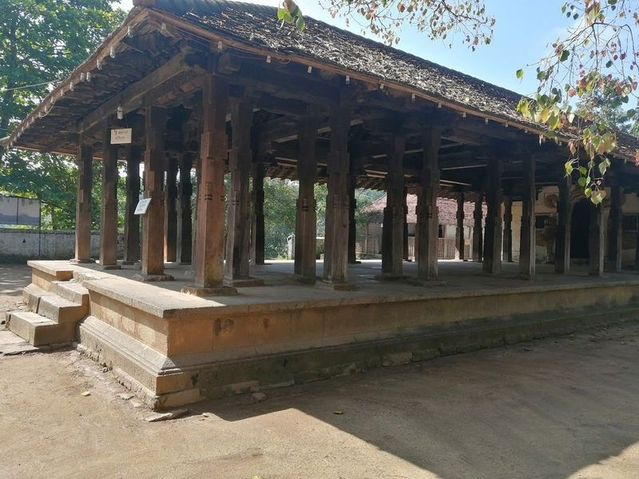
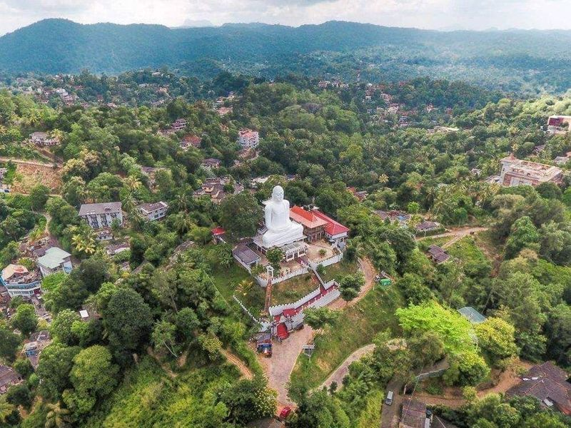
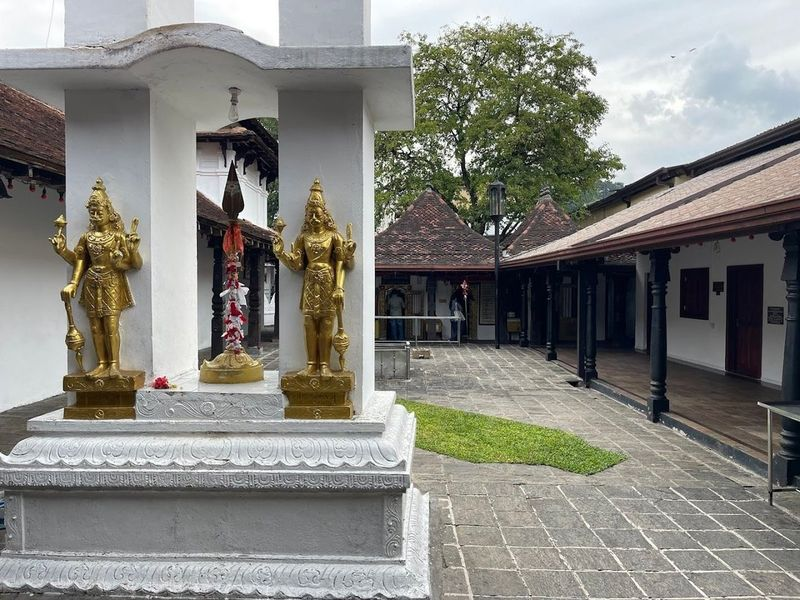
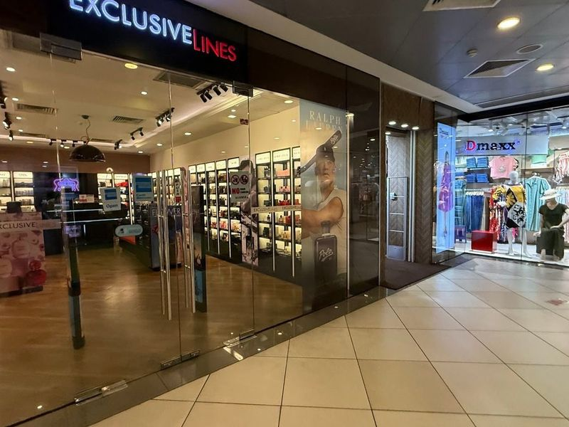
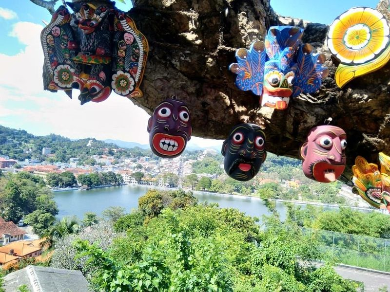
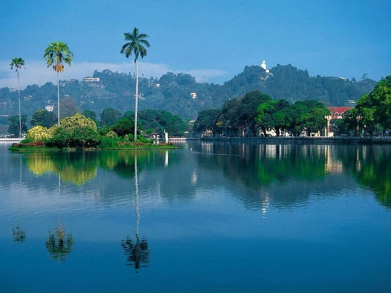
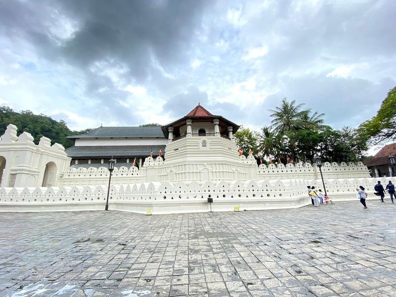
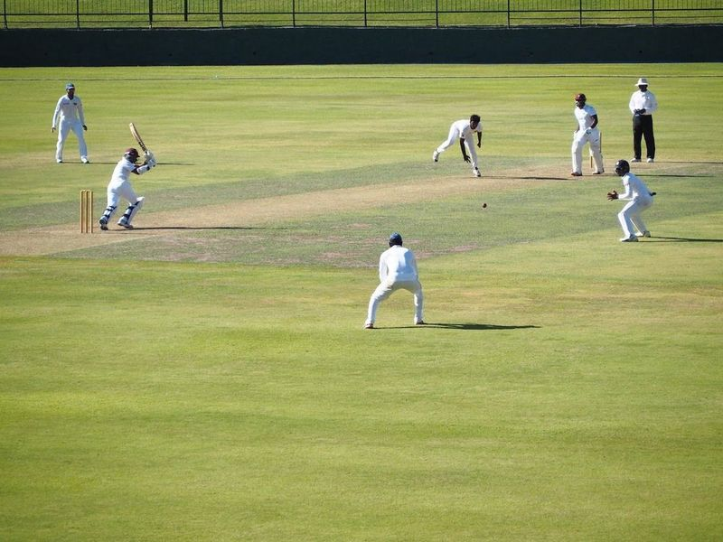
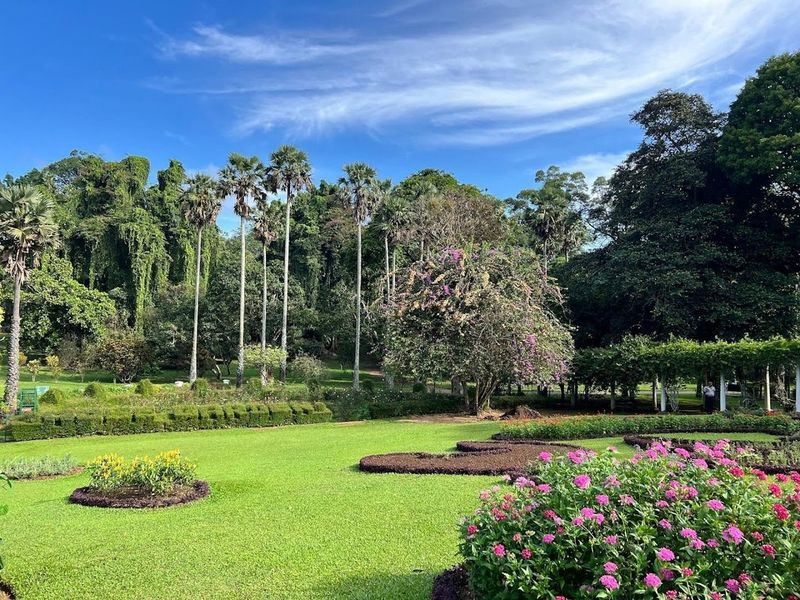
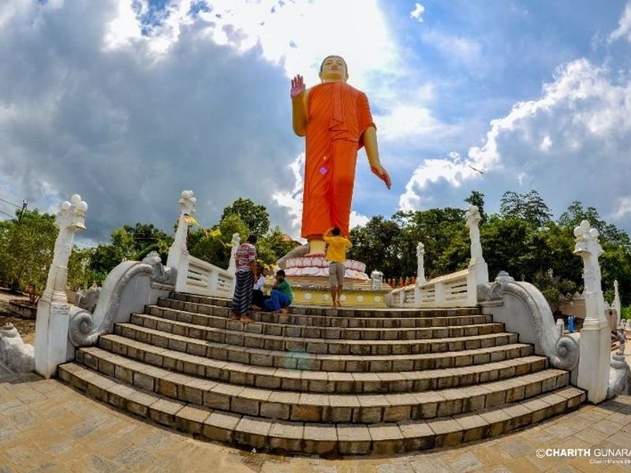

Explore Kandy
A Brief History
Kandy resisted Portuguese and Dutch encroachment as the last independent Sinhalese kingdom until British annexation in 1815. The Temple of the Tooth, lake embankment, and colonial quarters record how highland rulers guarded Buddhist relic traditions in central Sri Lanka. Royal Botanical Gardens and highland tea routes extend Kandyan court culture into Sri Lanka's central massif.
Attractions Map
Top Sights & Activities

Embekka Dewalaya
Embekka Dewalaya, a Hindu temple nestled in Sri Lanka, dates back to the 14th and 15th centuries. This cultural treasure is renowned for its exquisite wooden pillars adorned with intricate carvings that showcase the remarkable craftsmanship of ancient artisans. The traditional Kandyan architecture envelops visitors in a serene atmosphere, perfect for reflection and cultural exploration.

Sri Maha Bodhi Viharaya
Sri Maha Bodhi Viharaya is a captivating Buddhist temple that offers visitors an enchanting experience as they ascend steep stairs to reach hilltop views. This sacred site not only serves as a place of worship but also features a charming souvenir shop, perfect for picking up mementos of your visit.

Sri Maha Kataragama Devalaya - Kandy
Sri Maha Kataragama Devalaya in Kandy is a significant religious site with a rich history. It houses the revered tooth relic, which has been safeguarded by various rulers over the centuries. The temple complex also includes other devalayas dedicated to different deities and holds great importance for both Buddhists and Hindus.

Kandy City Centre
Kandy City Centre is a modern indoor mall spread across three levels, featuring a variety of brand-name stores, a food court, and a children's play area. It is markets in Kandy, offering high-end brands in clothing, shoes, cosmetics, and jewelry. Additionally, it houses restaurants and recreational areas for children. Tourists often visit this popular spot to purchase souvenirs before leaving Sri Lanka.

Arthur's Seat View Point, Kandy
Arthur's Seat View Point in Kandy is a must-visit destination for anyone looking to soak in the beauty of this city. Perched at a modest elevation, it offers an incredible panoramic view that captures the essence of Kandy, including landmarks like the Dalada Maligawa and the serene Kandy Lake. The viewpoint features a charming symbolic chair, perfect for snapping memorable photographs against this backdrop.

Kandy Lake
Kandy Lake is a serene, manmade oasis nestled in the heart of Kandy, perfect for leisurely strolls and invigorating jogs along its scenic pathways. This picturesque lake is complemented by the nearby Temple of the Tooth, a significant cultural site dating back to 1687 that once formed part of the royal palace. Despite suffering damage from a bomb attack in 1998, which unveiled 18th-century murals depicting Buddha's past lives, the temple remains an architectural marvel.

Sri Dalada Maligawa
Nestled in the heart of Kandy, Sri Dalada Maligawa, also known as the Temple of the Sacred Tooth Relic, stands as a beacon of spiritual significance and cultural heritage. This magnificent temple is revered by Buddhists worldwide for housing one of Buddhism's most sacred treasures—the canine tooth of Buddha. According to legend, this relic was smuggled from India on a princess's hair after Buddha’s cremation in 483 BC.

Pallekele International Cricket Stadium
I recently had the pleasure of experiencing a cricket match at the Pallekele International Cricket Stadium, nestled just 15 kilometers from Kandy, Sri Lanka. This modern venue boasts a seating capacity of 35,000 and is known for its well-maintained facilities that enhance the spectator experience. The pitch offers an exciting challenge for bowlers and has hosted numerous high-scoring games in its history.

Royal Botanic Gardens, Peradeniya
The Royal Botanic Gardens, Peradeniya, is a historic and expansive botanical garden in Sri Lanka. Established in 1843 during British colonial rule, the gardens boast over 4000 species of plants including a diverse collection of orchids, medicinal plants, spices, and palm trees. With its lush greenery and towering trees, the gardens attract nearly 2 million visitors annually.

Ranawana Purana Rajamaha Viharaya
Nestled amidst the lush greenery of Sri Lanka, the Ranawana Purana Rajamaha Viharaya is a Buddhist temple that showcases traditional architectural beauty. This relatively new temple features intricate carvings and decorative motifs that reflect the rich cultural heritage of the region. One of its most remarkable highlights is a towering 46-meter statue of Buddha, recognized as one of the tallest in Sri Lanka.